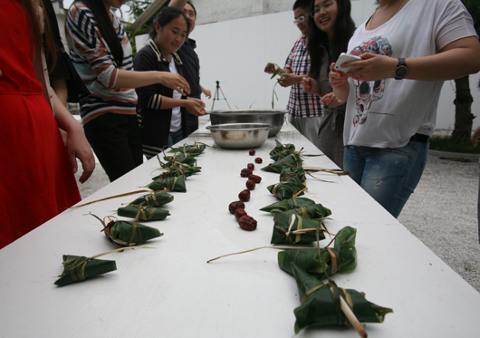

闳约端午节

荷叶香，粽叶馨，五月花开端午阳。青藤爬上墙，白月光，绿月光，艾叶青青插满堂。五月初五，又是一年端午好时节。在中国传统节日——端午节来来临之际，闳约组织全体员工聚集一堂，包粽子，庆端午，在品味传统文化的同时提升团队协作能力。
粽子，吃起来简单，包起来可就不那么容易了。尤其对于某些从来没包过粽子的同学来说，这可真是一项艰巨的任务。然而老姬同志在节前早早地就指示：必须包！每个人都得包！
于是部分同学很忐忑，愁眉苦脸怕出丑。然而这江米和粽叶摆上了桌子，娇羞的表情全跑没影了，一个个跟打了鸡血一样，完全不考虑粽子的感受！
后来听说要比赛，浑水摸米的同学都开始一本正经地拜师了，一个个有模有样的粽子，就此诞生！
于是乎，还记得小学的作文么？同学们望着自己的劳动果实，甜甜地笑了，并留下了满足的口水。
在流着口水等待的过程中，大伙玩起了《谁是卧底》的游戏，笑料百出。
对于一些新入职的员工来说，端午节是在闳约迎来的第一个节日。新的环境，新的面孔，不免产生些许的拘谨和陌生。
但在粽叶的鲜甜中，在嬉戏打闹间，在充满力量的腰鼓声中，大家都变成似乎已经相交甚久的好友。彼此信任、彼此关怀，不论是荣耀或是难题，闳约这些如花美眷的笑容，都能坦然去面对。闳约欢迎你们！